从感受进入价值
她把生活审美中的敏感度带进艺术史：作品如何改变人的时间感，价值如何被器物和制度保存。
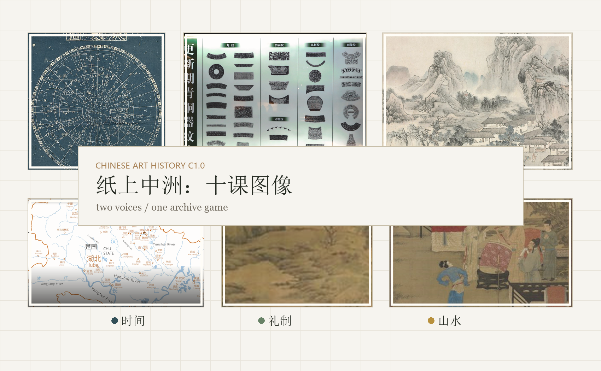
这不是一份普通课后记录，而是 KART 中国艺术史 C1.0 的课程展陈：十课图像、两位发问者、一场阶段测验。
图像先行。星图、玉佩、青铜、楚地、手卷、山水和生活场景共同构成这门课的精神现场。
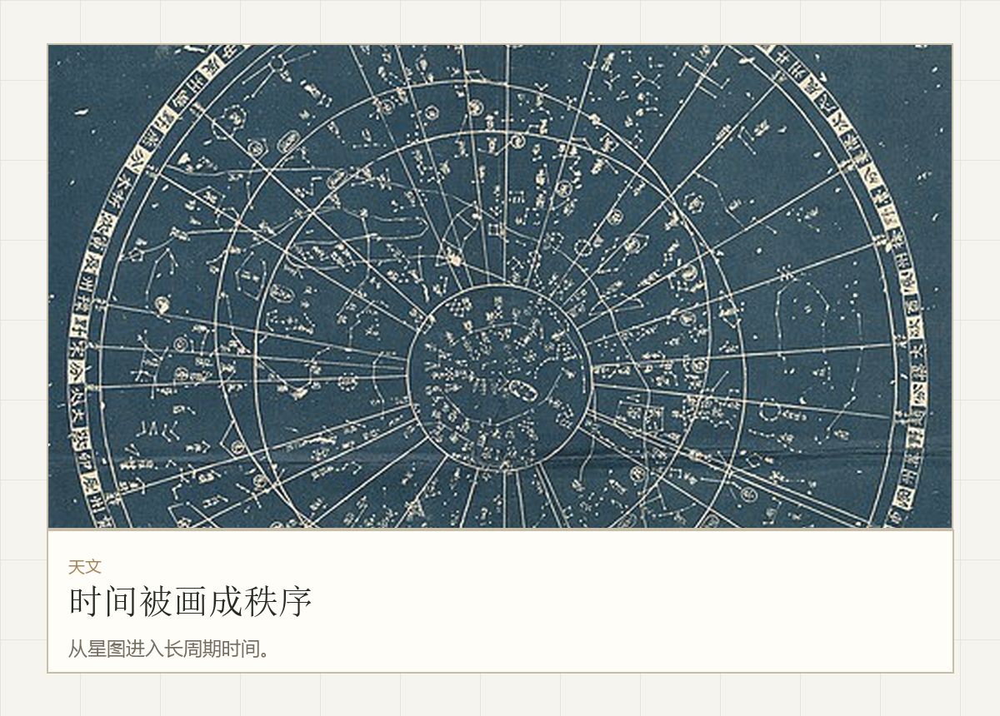
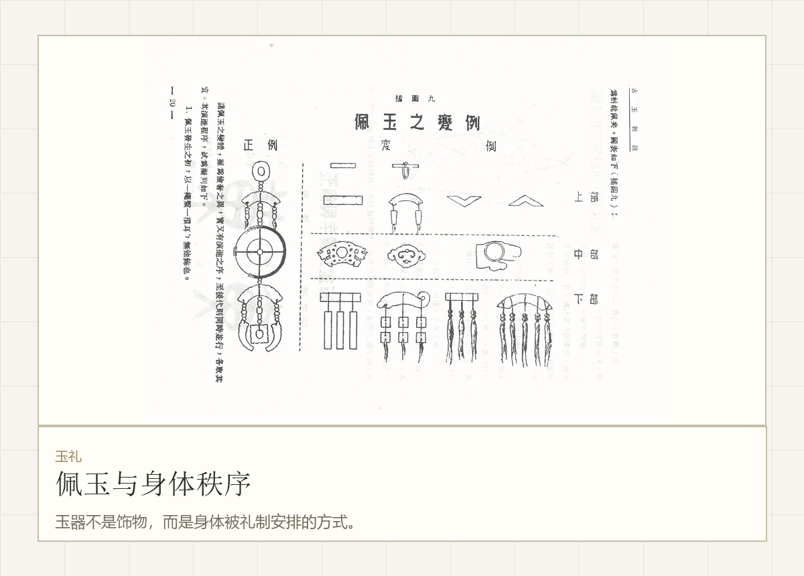
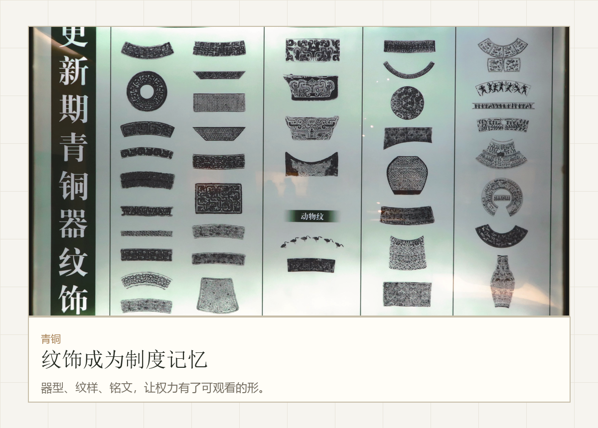
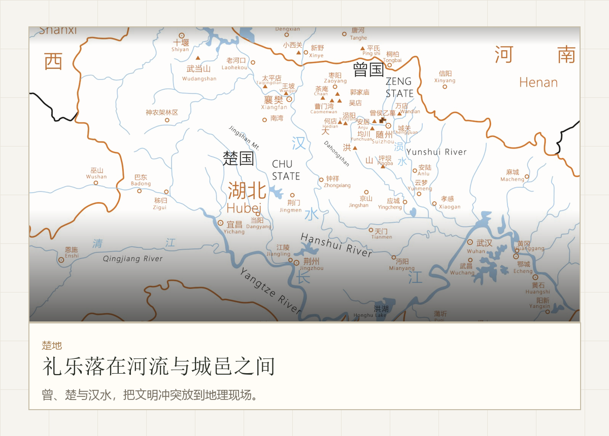
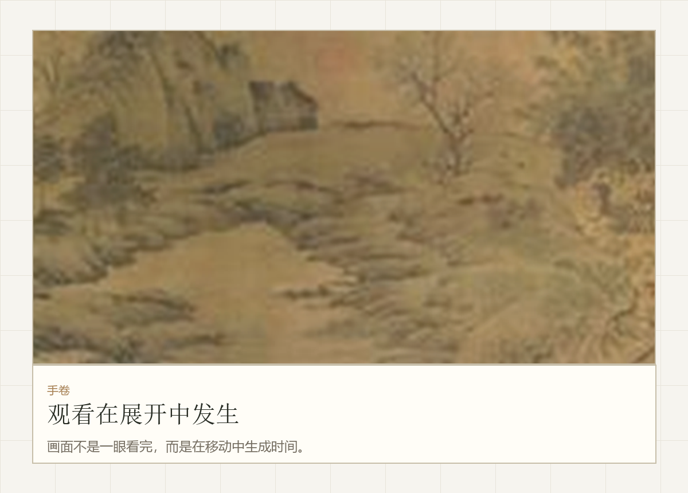
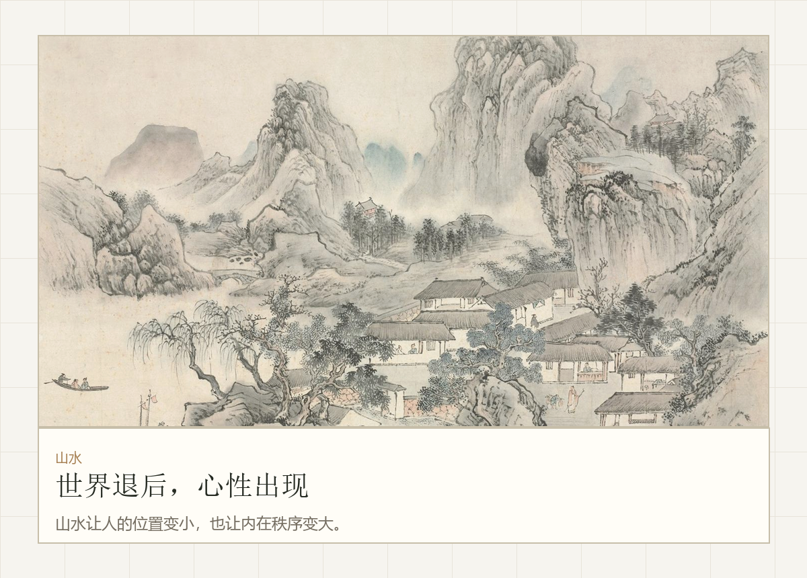
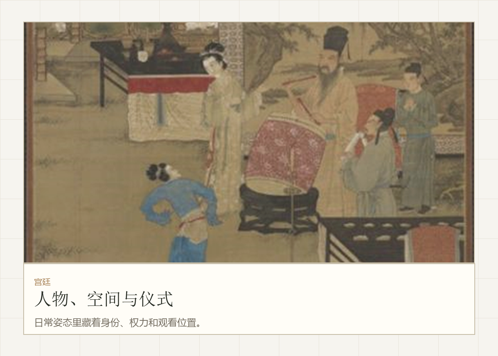
王美丽和宝玉不是被附会到课程里的名字，而是两种观看方法：一个问价值如何被感受，一个问秩序如何被器物保存。
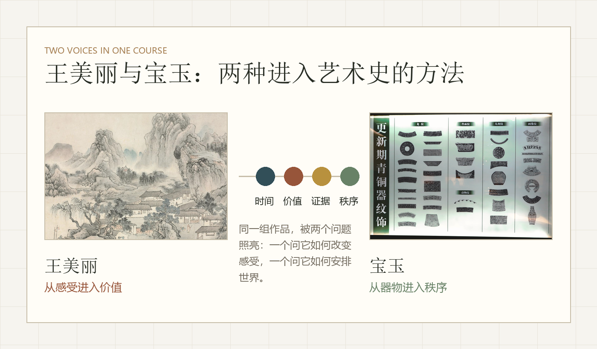
她把生活审美中的敏感度带进艺术史：作品如何改变人的时间感，价值如何被器物和制度保存。
她追问玉、青铜、铭文、拓片和空间：秩序怎样被固定下来，记忆怎样被留下。
暗室、路径、选择场和阶段雷达被整理成三张图版，让测验保留神秘感，也进入课程展陈的明亮秩序。
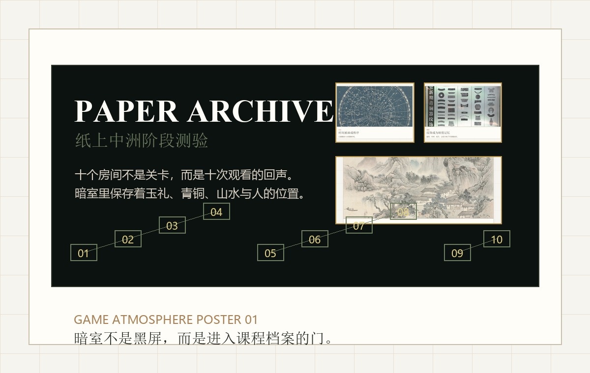
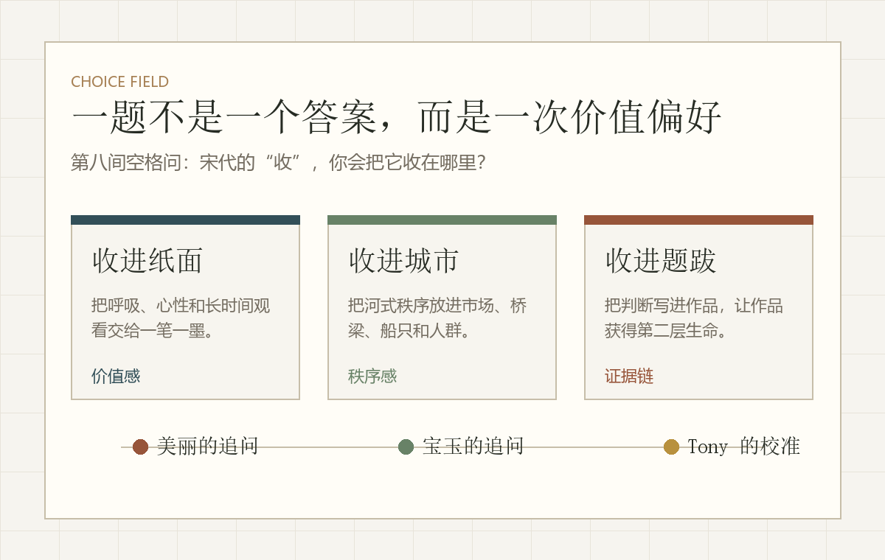
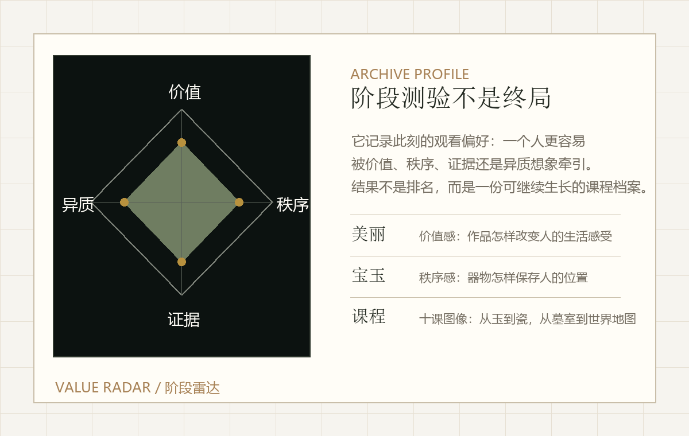
两份卷宗只保留与这门课相关的判断线索，把个人材料收束为课程中的观看位置。
明清合为第 10 课。阶段测验不是终局判断，而是这一阶段观看能力的回声。
档案室的门
身体与天文
铭文与承诺
异质想象
帝国尺度
图像与信仰
贵族与世界
观看系统
迁徙与山水
器物与全球